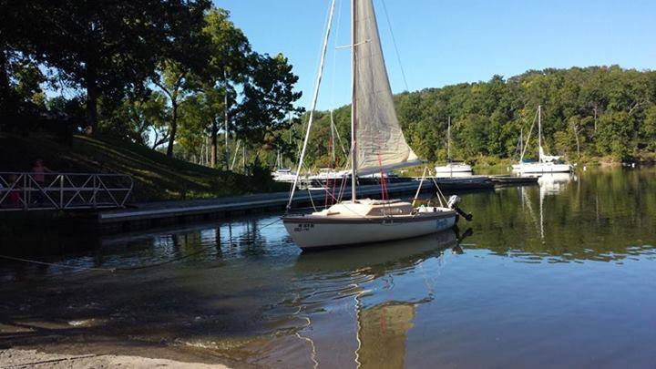

Sailing
What does sailing me to me? To me it is tranquil and relaxing.
I was first introduced to sailing by a good friend of mine. He took me out on a late fall day during the week to show me the fall foliage. I just remember how peaceful and beautiful it was and how at peace it made me feel.
From the first day, I was hooked. I spent much of the next few years learning what I could about sailing. I sailed most weekends with my new friends. Many times helping them with races or even taking guests out on the lake. But what I most missed was the peace.
I traded for a boat of my own about 4 years ago. I spent that first year learning to sail her. I named my boat "Tranquility". The last few years I have not had the time to take her out on the water, but look forward to next summer when I will finally have time.